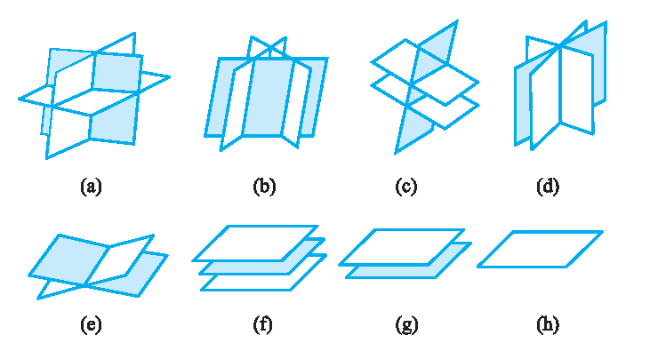

齐次线性方程组
\begin{equation}\label{eq:3.6}
\left\{\begin{array}{c}
a_{11} x_{1}+a_{12} x_{2}+\cdots+a_{1 n} x_{n}=0, \\
a_{21} x_{1}+a_{22} x_{2}+\cdots+a_{2 n} x_{n}=0, \\
\cdots \cdots \cdots \cdots \\
a_{m 1} x_{1}+a_{m 2} x_{2}+\cdots+a_{m n} x_{n}=0,
\end{array}\right.
\end{equation}
即
\begin{equation}\label{eq:3.7}
\boldsymbol{A X}=\boldsymbol{0},
\end{equation}
显然有一组平凡解 $x_{1}=x_{2}=\cdots=x_{n}=0$, 即 $\boldsymbol{X}=\mathbf{0}$, 称为零解.
关于齐次线性方程组 $\boldsymbol{A X}=\boldsymbol{0}$ 的解, 我们已经得到下列重要结论:
设 $\boldsymbol{A}$ 为 $m \times n$ 矩阵, 则下面三命题等价:
$1^{\circ}$ $\boldsymbol{A X}=\boldsymbol{0}$ 只有零解;
$2^{\circ}$ $R(\boldsymbol{A})=n$;
$3^{\circ}$ $\boldsymbol{A}$ 的列向量组线性无关.
即下面三命题等价:
$1^{\circ}$ $\boldsymbol{A X}=\mathbf{0}$ 有非零解;
$2^{\circ}$ $R(\boldsymbol{A}) < n$;
$3^{\circ}$ $\boldsymbol{A}$ 的列向量组线性相关.
特别地, 当 $\boldsymbol{A}$ 为 $n$ 阶方阵时, 下面三命题等价:
$1^{\circ}$ $\boldsymbol{A X}=\mathbf{0}$ 只有零解 (有非零解);
$2^{\circ}$ $R(\boldsymbol{A})=n$ $(R(\boldsymbol{A}) < n)$;
$3^{\circ}$ $\operatorname{det} \boldsymbol{A} \neq 0$ $(\operatorname{det} \boldsymbol{A}=0)$.
关于 $\boldsymbol{A X}=\boldsymbol{0}$ 的解, 有如下性质:
性质 $1$：
若 $\boldsymbol{\xi}_{1}, \boldsymbol{\xi}_{2}$ 为齐次线性方程组 $\boldsymbol{A X}=\boldsymbol{0}$ 的解, 则 $\boldsymbol{X}=\boldsymbol{\xi}_{1}+\boldsymbol{\xi}_{2}$ 也是 $\boldsymbol{A X}=\boldsymbol{0}$ 的解.
证明：
由于 $\boldsymbol{A}\left(\boldsymbol{\xi}_{1}+\boldsymbol{\xi}_{2}\right)=\boldsymbol{A} \boldsymbol{\xi}_{1}+\boldsymbol{A} \boldsymbol{\xi}_{2}=\boldsymbol{0}+\boldsymbol{0}=\boldsymbol{0}$, 因而 $\boldsymbol{\xi}_{1}+\boldsymbol{\xi}_{2}$ 也是 $\boldsymbol{A X}=\boldsymbol{0}$ 的解.
性质 $2$：
若 $\boldsymbol{\xi}$ 为齐次线性方程组 $\boldsymbol{A X}=\boldsymbol{0}$ 的解, $k$ 为数, 则 $\boldsymbol{X}=k \boldsymbol{\xi}$ 也是 $\boldsymbol{A X}=\boldsymbol{0}$ 的解.
证明：
由 $\boldsymbol{A}(k \boldsymbol{\xi})=k \boldsymbol{A} \boldsymbol{\xi}=k \mathbf{0}=\mathbf{0}$ 知结论成立.
由性质 $1, 2$ 立即得
性质 $3$：
齐次线性方程组 $\boldsymbol{A X}=\boldsymbol{0}$ 解向量的线性组合也为 $\boldsymbol{A X}=\boldsymbol{0}$ 的解. 即设 $\boldsymbol{\xi}_{1}, \boldsymbol{\xi}_{2}, \cdots, \boldsymbol{\xi}_{s}$ 为 $\boldsymbol{A X}=\boldsymbol{0}$ 的解, 则对任意 $s$ 个数 $k_{1}, k_{2}, \cdots, k_{s}$, $k_{1} \boldsymbol{\xi}_{1}+k_{2} \boldsymbol{\xi}_{2}+\cdots+k_{s} \boldsymbol{\xi}_{s}$ 也是 $\boldsymbol{A X}=\boldsymbol{0}$ 的解.
将齐次线性方程组 $\boldsymbol{A X}=\boldsymbol{0}$ 的解的全体记为 $W$, 即
$$
W=\left\{\boldsymbol{X} \in \mathbf{R}^{n} \mid \boldsymbol{A X}=\boldsymbol{0}\right\} .
$$
由性质 $1, 2$ 知 $W$ 为 $\mathrm{R}^{n}$ 的一个子空间, 称为 $\boldsymbol{A X}=\boldsymbol{0}$ 的 解空间, 其任一组基称为 $\boldsymbol{A X}=\boldsymbol{0}$ 的一个基础解系.
于是, 设 $\boldsymbol{\xi}_{1}, \boldsymbol{\xi}_{2}, \cdots, \boldsymbol{\xi}_{s}$ 是 $\boldsymbol{A} \boldsymbol{X}=\boldsymbol{0}$ 的一组解向量, 则 $\boldsymbol{\xi}_{1}, \boldsymbol{\xi}_{2}, \cdots, \boldsymbol{\xi}_{s}$ 是 $\boldsymbol{A} \boldsymbol{X}= \boldsymbol{0}$ 的基础解系当且仅当 $\boldsymbol{\xi}_{1}, \boldsymbol{\xi}_{2}, \cdots, \boldsymbol{\xi}_{s}$ 线性无关, 且 $\boldsymbol{A} \boldsymbol{X}=\boldsymbol{0}$ 的任一解向量都可表为 $\boldsymbol{\xi}_{1}, \boldsymbol{\xi}_{2}, \cdots, \boldsymbol{\xi}_{s}$ 的线性组合.
易见, 仅当 $\boldsymbol{A X}=\boldsymbol{0}$ 有非零解时才有基础解系.
定理 $1$：
设齐次线性方程组 $\boldsymbol{A X}=\mathbf{0}$ 的系数矩阵 $\boldsymbol{A}$ 的秩 $R(\boldsymbol{A})=r < n$, 则方程组 $\boldsymbol{A X}=\boldsymbol{0}$ 有基础解系且所含解向量个数为 $n-r$, 即 $W$ 的维数为 $n-r$, 这里 $n$ 为方程组中未知数的个数.
证明：
设系数矩阵 $\boldsymbol{A}$ 的秩为 $r$, 不妨设 $\boldsymbol{A}$ 的前 $r$ 个列向量线性无关, 于是由 $\boldsymbol{A}$ 经行 初等变换可得
$$
\boldsymbol{B}=\left(\begin{array}{cccccc}
1 & \cdots & 0 & b_{11} & \cdots & b_{1, n-r} \\
\vdots & & \vdots & \vdots & & \vdots \\
0 & \cdots & 1 & b_{r 1} & \cdots & b_{r, n-r} \\
0 & \cdots & 0 & 0 & \cdots & 0 \\
\vdots & & \vdots & \vdots & & \vdots \\
0 & \cdots & 0 & 0 & \cdots & 0
\end{array}\right),
$$
与 $\boldsymbol{B}$ 对应, 有方程组
\begin{equation}\label{eq:3.8}
\left\{\begin{array}{c}
x_{1}=-b_{11} x_{r+1}-\cdots-b_{1, n-r} x_{n}, \\
\cdots \cdots \cdots \cdots \\
x_{r}=-b_{r 1} x_{r+1}-\cdots-b_{r, n-r} x_{n} .
\end{array}\right.
\end{equation}
方程组 $\boldsymbol{A X}=\boldsymbol{0}$ 与方程组 (\ref{eq:3.8}) 同解. 在方程组 (\ref{eq:3.8}) 中, 任给 $x_{r+1}, \cdots, x_{n}$ 一组 值, 则惟一确定 $x_{1}, x_{2}, \cdots, x_{r}$ 的值, 就得方程组 (\ref{eq:3.8}) 的一个解,
也就是方程组 $\boldsymbol{A X}=\mathbf{0}$ 的解. 令 $x_{r+1}, \cdots, x_{n}$ 取下列 $n-r$ 组数
$$
\left(\begin{array}{c}
x_{r+1} \\
x_{r+2} \\
\vdots \\
x_{n}
\end{array}\right)=\left(\begin{array}{c}
1 \\
0 \\
\vdots \\
0
\end{array}\right),\left(\begin{array}{c}
0 \\
1 \\
\vdots \\
0
\end{array}\right), \cdots,\left(\begin{array}{c}
0 \\
0 \\
\vdots \\
1
\end{array}\right) .
$$
由方程组 (\ref{eq:3.8}) 依次可得
$$
\left(\begin{array}{c}
x_{1} \\
\vdots \\
x_{r}
\end{array}\right)=\left(\begin{array}{c}
-b_{11} \\
\vdots \\
-b_{r 1}
\end{array}\right),\left(\begin{array}{c}
-b_{12} \\
\vdots \\
-b_{r 2}
\end{array}\right), \cdots,\left(\begin{array}{c}
-b_{1, n-r} \\
\vdots \\
-b_{r, n-r}
\end{array}\right),
$$
从而求得方程组 $\boldsymbol{A} \boldsymbol{X}=\mathbf{0}$ 的 $n-r$ 个解:
$$
\boldsymbol{\xi}_{1}=\left(\begin{array}{c}
-b_{11} \\
\vdots \\
-b_{r 1} \\
1 \\
0 \\
\vdots \\
0
\end{array}\right), \boldsymbol{\xi}_{2}=\left(\begin{array}{c}
-b_{12} \\
\vdots \\
-b_{r 2} \\
0 \\
1 \\
\vdots \\
0
\end{array}\right), \cdots, \boldsymbol{\xi}_{n-r}=\left(\begin{array}{c}
-b_{1, n-r} \\
\vdots \\
-b_{r, n-r} \\
0 \\
0 \\
\vdots \\
1
\end{array}\right) .
$$
$\quad$ 下面证明 $\boldsymbol{\xi}_{1}, \boldsymbol{\xi}_{2}, \cdots, \boldsymbol{\xi}_{n-r}$ 就是基础解系.
$\quad$ 首先, 因 $\left(x_{r+1}, x_{r+2}, \cdots, x_{n}\right)^{\mathrm{T}}$ 所取的 $n-r$ 个 $n-r$ 维向量
$$
\left(\begin{array}{c}
1 \\
0 \\
\vdots \\
0
\end{array}\right),\left(\begin{array}{c}
0 \\
1 \\
\vdots \\
0
\end{array}\right), \cdots,\left(\begin{array}{c}
0 \\
0 \\
\vdots \\
1
\end{array}\right)
$$
线性无关, 所以在每个向量前面添加 $r$ 个分量而得到的 $n-r$ 个 $n$ 维向量 $\boldsymbol{\xi}_{1}, \boldsymbol{\xi}_{2}, \cdots, \boldsymbol{\xi}_{n-r}$ 也线性无关 (参见习题 $3.2$ 的题 $10$).
$\quad$ 其次, 证明方程组 $\boldsymbol{A} \boldsymbol{X}=\mathbf{0}$ 的任一解 $\boldsymbol{X}=\left(l_{1}, \cdots, l_{r}, l_{r+1}, \cdots, l_{n}\right)^{\mathrm{T}}$ 都可由 $\boldsymbol{\xi}_{1}$, $\boldsymbol{\xi}_{2}, \cdots, \boldsymbol{\xi}_{n-r}$ 线性表出. 为此, 作向量
$$
\boldsymbol{\eta}=l_{r+1} \boldsymbol{\xi}_{1}+l_{r+2} \boldsymbol{\xi}_{2}+\cdots+l_{n} \boldsymbol{\xi}_{n-r},
$$
由性质 $3$ 知 $\boldsymbol{\eta}$ 也是 $\boldsymbol{A X}=\boldsymbol{0}$ 的解. 比较 $\boldsymbol{\eta}$ 与 $\boldsymbol{X}$, 它们的后面 $n-r$ 个分量对应相等,
由于它们都满足方程组 (\ref{eq:3.8}), 从而它们的前面 $r$ 个分量也必对应相等, 因此 $\boldsymbol{X}=\boldsymbol{\eta}$, 即
$$
\boldsymbol{X}=l_{r+1} \boldsymbol{\xi}_{1}+l_{r+2} \boldsymbol{\xi}_{2}+\cdots+l_{n} \boldsymbol{\xi}_{n-r},
$$
于是由定义知, $\boldsymbol{\xi}_{1}, \boldsymbol{\xi}_{2}, \cdots, \boldsymbol{\xi}_{n-r}$ 为 $\boldsymbol{A} \boldsymbol{X}=\boldsymbol{0}$ 的基础解系.
$\quad$ 值得注意的是, 该定理的证明实际上就是一个具体求基础解系的方法. 因为齐次线性方程组的基础解系实质上就是向量组 $W$ 的一个极大无关组, 因而一般不惟一, 但是基础解系中向量个数必为 $n-r$.
例如, 任取 $n-r$ 个线性无关的 $n-r$ 维向量, 并使 $\left(\begin{array}{c}x_{r+1} \\ x_{r+2} \\ \vdots \\ x_{n}\end{array}\right)$ 分别等于这些向量, 再通过方程组 (\ref{eq:3.8}) 求出 $x_{1}, x_{2}, \cdots, x_{r}$, 便得一个基础解系.
设求得 $\boldsymbol{\xi}_{1}, \boldsymbol{\xi}_{2}, \cdots, \boldsymbol{\xi}_{n-r}$ 为 $\boldsymbol{A X}=\boldsymbol{0}$ 的一个基础解系, 则该方程组的任一解可表示为
$$
\boldsymbol{X}=k_{1} \boldsymbol{\xi}_{1}+k_{2} \boldsymbol{\xi}_{2}+\cdots+k_{n-r} \boldsymbol{\xi}_{n-r},
$$
其中 $k_{1}, k_{2}, \cdots, k_{n-r}$ 为任意数, 上式称为 $\boldsymbol{A} \boldsymbol{X}=\boldsymbol{0}$ 的通解.
例 $1$：
求齐次线性方程组 $\left\{\begin{array}{r}2 x_{1}+x_{2}-2 x_{3}+3 x_{4}=0, \\ 3 x_{1}+2 x_{2}-x_{3}+2 x_{4}=0, \\ x_{1}+x_{2}+x_{3}-x_{4}=0\end{array}\right.$ 的通解.
解：
对系数矩阵作行初等变换
$$
\begin{aligned}
\boldsymbol{A}=& \left(\begin{array}{cccc}
2 & 1 & -2 & 3 \\
3 & 2 & -1 & 2 \\
1 & 1 & 1 & -1
\end{array}\right) \rightarrow\left(\begin{array}{cccc}
0 & -1 & -4 & 5 \\
0 & -1 & -4 & 5 \\
1 & 1 & 1 & -1
\end{array}\right)\\
\rightarrow &\left(\begin{array}{cccc}
0 & 0 & 0 & 0 \\
0 & -1 & -4 & 5 \\
1 & 1 & 1 & -1
\end{array}\right) \rightarrow\left(\begin{array}{cccc}
1 & 1 & 1 & -1 \\
0 & -1 & -4 & 5 \\
0 & 0 & 0 & 0
\end{array}\right) \\
\rightarrow & \left(\begin{array}{cccc}
1 & 0 & -3 & 4 \\
0 & 1 & 4 & -5 \\
0 & 0 & 0 & 0
\end{array}\right),
\end{aligned}
$$
得同解方程组 $\left\{\begin{array}{l}x_{1}=3 x_{3}-4 x_{4} \\ x_{2}=-4 x_{3}+5 x_{4}\end{array}\right.$. 因此基础解系为
$$
\boldsymbol{\xi}_{1}=\left(\begin{array}{c}
3 \\
-4 \\
1 \\
0
\end{array}\right), \quad \boldsymbol{\xi}_{2}=\left(\begin{array}{c}
-4 \\
5 \\
0 \\
1
\end{array}\right).
$$
故原方程组的通解为
$$
\boldsymbol{X}=k_{1} \boldsymbol{\xi}_{1}+k_{2} \boldsymbol{\xi}_{2}, \quad k_{1}, k_{2} \text { 为任意数. }
$$
例 $2$：
求齐次线性方程组 $\left\{\begin{array}{r}2 x_{1}+3 x_{2}+x_{3}=0, \\ x_{1}-2 x_{2}+4 x_{3}=0, \\ 3 x_{1}+8 x_{2}-2 x_{3}=0, \\ 4 x_{1}-x_{2}+9 x_{3}=0\end{array}\right.$ 的通解.
解：
对系数矩阵 $\boldsymbol{A}$ 作行初等变换
$$
\begin{aligned}
\boldsymbol{A} &=\left(\begin{array}{ccc}
2 & 3 & 1 \\
1 & -2 & 4 \\
3 & 8 & -2 \\
4 & -1 & 9
\end{array}\right) \rightarrow\left(\begin{array}{ccc}
1 & -2 & 4 \\
0 & 1 & -1 \\
0 & 1 & -1 \\
0 & 1 & -1
\end{array}\right) \\
& \rightarrow\left(\begin{array}{ccc}
1 & -2 & 4 \\
0 & 1 & -1 \\
0 & 0 & 0 \\
0 & 0 & 0
\end{array}\right) \rightarrow\left(\begin{array}{ccc}
1 & 0 & 2 \\
0 & 1 & -1 \\
0 & 0 & 0 \\
0 & 0 & 0
\end{array}\right),
\end{aligned}
$$
得同解方程组 $\left\{\begin{array}{l}x_{1}=-2 x_{3}, \\ x_{2}=x_{3} .\end{array}\right.$ 取 $x_{3}=1$ 得基础解系 $\boldsymbol{\xi}=(-2,1,1)^{\mathrm{T}}$. 故原方程组的通解为 $\boldsymbol{X}=k \boldsymbol{\xi}$, $k$ 为任意数.
例 $3$：
试证明与 $\boldsymbol{A X}=\boldsymbol{0}$ 基础解系等价的线性无关的向量组也是该方程组的基础解系.
证明：
两个等价的线性无关的向量组所含向量个数是相等的.
设 $\boldsymbol{\xi}_{1}, \boldsymbol{\xi}_{2}, \cdots, \boldsymbol{\xi}_{s}$ 是 $\boldsymbol{A X}=\mathbf{0}$ 的一个基础解系, $\boldsymbol{\alpha}_{1}, \boldsymbol{\alpha}_{2}, \cdots, \boldsymbol{\alpha}_{s}$ 与之等价, 则 $\boldsymbol{\alpha}_{i}(i=$ $1,2, \cdots, s)$ 可由 $\boldsymbol{\xi}_{1}, \boldsymbol{\xi}_{2}, \cdots, \boldsymbol{\xi}_{s}$ 线性表出, 从而 $\boldsymbol{\alpha}_{i}(i=1,2, \cdots, s)$ 也是 $\boldsymbol{A} \boldsymbol{X}=\mathbf{0}$ 的解.
$\quad$ 因齐次线性方程组任一解 $\boldsymbol{\beta}$ 均可由基础解系 $\boldsymbol{\xi}_{1}, \boldsymbol{\xi}_{2}, \cdots, \boldsymbol{\xi}_{s}$ 线性表出, 从而由题 设知 $\boldsymbol{\beta}$ 也可由 $\boldsymbol{\alpha}_{1}, \boldsymbol{\alpha}_{2}, \cdots, \boldsymbol{\alpha}_{s}$ 线性表出, 又 $\boldsymbol{\alpha}_{1}, \boldsymbol{\alpha}_{2}, \cdots, \boldsymbol{\alpha}_{s}$ 线性无关, 于是由定义知 $\boldsymbol{\alpha}_{1}, \boldsymbol{\alpha}_{2}, \cdots, \boldsymbol{\alpha}_{\boldsymbol{s}}$ 为一个基础解系.
例 $4$：
设 $n$ 阶矩阵 $\boldsymbol{A}, \boldsymbol{B}$ 满足 $\boldsymbol{A} \boldsymbol{B}=\boldsymbol{O}$, 证明 $R(\boldsymbol{A})+R(\boldsymbol{B}) \leqslant n$.
证明：
将 $\boldsymbol{B}$ 分块为 $\boldsymbol{B}=\left(\boldsymbol{b}_{1}, \boldsymbol{b}_{2}, \cdots, \boldsymbol{b}_{n}\right)$, 其中 $\boldsymbol{b}_{1}, \boldsymbol{b}_{2}, \cdots, \boldsymbol{b}_{n}$ 为 $\boldsymbol{B}$ 的列向量组, 则
$$
\boldsymbol{A B}=\boldsymbol{A}\left(\boldsymbol{b}_{1}, \boldsymbol{b}_{2}, \cdots, \boldsymbol{b}_{n}\right)=\left(\boldsymbol{Ab}_{1}, \boldsymbol{Ab}_{2}, \cdots, \boldsymbol{Ab}_{n}\right)=\boldsymbol{O},
$$
即
$$
\boldsymbol{A} \boldsymbol{b}_{i}=\mathbf{0} \quad(i=1,2, \cdots, n),
$$
即 $\boldsymbol{b}_{i}(i=1,2, \cdots, n)$ 为 $\boldsymbol{A} \boldsymbol{X}=\mathbf{0}$ 的解, 因而 $\boldsymbol{b}_{i}(i=1,2, \cdots, n)$ 可由 $\boldsymbol{A X}=\mathbf{0}$ 的基础解系 $\boldsymbol{\xi}_{1}, \boldsymbol{\xi}_{2}, \cdots, \boldsymbol{\xi}_{n-r}$ 线性表出, 这里 $r=R(\boldsymbol{A})$. 于是
$$
R\left(\boldsymbol{b}_{1}, \boldsymbol{b}_{2}, \cdots, \boldsymbol{b}_{n}\right) \leqslant R\left(\boldsymbol{\xi}_{1}, \boldsymbol{\xi}_{2}, \cdots, \boldsymbol{\xi}_{n-r}\right)=n-R(\boldsymbol{A}),
$$
即 $R(\boldsymbol{B}) \leqslant n-R(\boldsymbol{A})$, 也就是 $R(\boldsymbol{A})+R(\boldsymbol{B}) \leqslant n$.
本节定理揭示了 $\boldsymbol{A}$ 的秩和 $\boldsymbol{A X}=\boldsymbol{0}$ 的解的关系, 它不仅对求解 $\boldsymbol{A X}=\boldsymbol{0}$ 具有重要意义, 而且如例 $4$ 所表明的那样, 常常可以通过研究齐次线性方程组的解来讨论系数矩 阵的秩.
例 $5$：
设 $n$ 阶矩阵 $\boldsymbol{A}$ 的秩 $R(\boldsymbol{A})=n-1(n \geqslant 2)$, 证明 $R\left(\boldsymbol{A}^{*}\right)=1$.
证明：
由 $R(\boldsymbol{A})=n-1$ 知 $\operatorname{det} \boldsymbol{A}=0$, 于是 $\boldsymbol{A} \boldsymbol{A}^{*}=(\operatorname{det} \boldsymbol{A}) \boldsymbol{I}=\boldsymbol{O}$. 便有
$$
R(\boldsymbol{A})+R\left(\boldsymbol{A}^{*}\right) \leqslant n .
$$
所以 $R\left(\boldsymbol{A}^{*}\right) \leqslant n-R(\boldsymbol{A})=1$. 又由 $R(\boldsymbol{A})=n-1$ 知 $\boldsymbol{A}$ 中有 $n-1$ 阶子式不为零, 因而 $\boldsymbol{A}^{*} \neq \boldsymbol{O}$, 便有 $R\left(\boldsymbol{A}^{*}\right) \geqslant 1$. 这样我们就证得 $R\left(\boldsymbol{A}^{*}\right)=1$.
综合例 $5$ 和 $\S 2.5$ 的例 $6$, 我们证明了如下常用结果: 若 $\boldsymbol{A}$ 为 $n$ 阶矩阵, 则
$$
R\left(\boldsymbol{A}^{*}\right)= \begin{cases}n, & R(\boldsymbol{A})=n, \\ 1, & R(\boldsymbol{A})=n-1\, (n \geqslant 2), \\ 0, & R(\boldsymbol{A}) < n-1\, (n \geqslant 2) .\end{cases}
$$
用线性方程组的理论可以讨论空间平面的位置关系.
例 $6$：
对于三个过原点的平面
$$
\begin{cases}\pi_{1}: & a_{1} x+b_{1} y+c_{1} z=0, \\ \pi_{2}: & a_{2} x+b_{2} y+c_{2} z=0, \\ \pi_{3}: & a_{3} x+b_{3} y+c_{3} z=0,\end{cases}
$$
根据系数矩阵 $\boldsymbol{A}=\left(\begin{array}{ccc}a_{1} & b_{1} & c_{1} \\ a_{2} & b_{2} & c_{2} \\ a_{3} & b_{3} & c_{3}\end{array}\right)$ 的秩 $r$ 的大小分别讨论如下:
$(1)$ 当 $r=3$ 时, 由 $\S 3.2$ 的定理 $2$ 知, 线性方程组只有零解, 即三平面相交于一点的充要条件是 $R(\boldsymbol{A})=3$, 即 $\operatorname{det} \boldsymbol{A} \neq 0$.
$(2)$ 当 $r=2$ 时, 三平面有两平面相交于一直线, 另一平面或通过这一交线, 或与其中一平面重合. 这是因为假如 $\boldsymbol{\alpha}_{1}, \boldsymbol{\alpha}_{2}, \boldsymbol{\alpha}_{3}$ 是 $\boldsymbol{A}$ 的行向量, 由 $R(\boldsymbol{A})=2$ 知 $\boldsymbol{\alpha}_{1}, \boldsymbol{\alpha}_{2}, \boldsymbol{\alpha}_{3}$ 线性相 关, 而其中有两个向量线性无关. 假设 $\boldsymbol{\alpha}_{1}, \boldsymbol{\alpha}_{2}$ 线性无关, 那么 $a_{1}, b_{1}, c_{1}$ 与 $a_{2}, b_{2}, c_{2}$ 不成比 例, 因此平面 $\pi_{1}$ 与 $\pi_{2}$ 交于一条直线. 由 $\boldsymbol{\alpha}_{1}, \boldsymbol{\alpha}_{2}, \boldsymbol{\alpha}_{3}$ 线性相关, 可知 $\boldsymbol{\alpha}_{3}=k_{1} \boldsymbol{\alpha}_{1}+k_{2} \boldsymbol{\alpha}_{2}$, 当 $k_{1} k_{2} \neq 0$ 时, 平面 $\pi_{3}$ 通过 $\pi_{1}, \pi_{2}$ 两平面的交线. 当 $k_{1} k_{2}=0$ 时, 若 $k_{1}=0$, 则 $\boldsymbol{\alpha}_{3}=k_{2} \boldsymbol{\alpha}_{2}$, 这时 $\pi_{2}, \pi_{3}$ 平行, 又因为它们都过原点, 所以 $\pi_{2}, \pi_{3}$ 两平面重合. 同理, 若 $k_{2}=0$, 则有 $\pi_{1}, \pi_{3}$ 两平面重合.
$(3)$ 当 $r=1$ 时, $\boldsymbol{A}$ 的三个行向量两两线性相关, 从而三平面两两平行, 又因为它们都过原点, 因而重合.
对于非齐次线性方程组
\begin{equation}\label{eq:3.9}
\left\{\begin{array}{c}
a_{11} x_{1}+a_{12} x_{2}+\cdots+a_{1 n} x_{n}=b_{1}, \\
a_{21} x_{1}+a_{22} x_{2}+\cdots+a_{2 n} x_{n}=b_{2}, \\
\cdots \cdots \cdots \cdots \cdots \cdots \\
a_{m 1} x_{1}+a_{m 2} x_{2}+\cdots+a_{m n} x_{n}=b_{m},
\end{array}\right.
\end{equation}
设
$$
\boldsymbol{\alpha}_{1}=\left(\begin{array}{c}
a_{11} \\
a_{21} \\
\vdots \\
a_{m 1}
\end{array}\right), \boldsymbol{\alpha}_{2}=\left(\begin{array}{c}
a_{12} \\
a_{22} \\
\vdots \\
a_{m 2}
\end{array}\right), \cdots, \boldsymbol{\alpha}_{n}=\left(\begin{array}{c}
a_{1 n} \\
a_{2 n} \\
\vdots \\
a_{m n}
\end{array}\right), \boldsymbol{b}=\left(\begin{array}{c}
b_{1} \\
b_{2} \\
\vdots \\
b_{m}
\end{array}\right),
$$
则方程组 $(\ref{eq:3.9})$ 可记为 $x_{1} \boldsymbol{\alpha}_{1}+x_{2} \boldsymbol{\alpha}_{2}+\cdots+x_{n} \boldsymbol{\alpha}_{n}=\boldsymbol{b}$, 即
\begin{equation}\label{eq:3.10}
\boldsymbol{A X}=\boldsymbol{b}.
\end{equation}
关于非齐次线性方程组 $\boldsymbol{A X}=\boldsymbol{b}$, 在本章 $\S 3.2$ 中我们已得到如下重要结果:
$$
\boldsymbol{A} \boldsymbol{X}=\boldsymbol{b} \text { 有解 } \Leftrightarrow \boldsymbol{b} \text { 可由 } \boldsymbol{\alpha}_{1}, \boldsymbol{\alpha}_{2}, \cdots, \boldsymbol{\alpha}_{n} \text { 线性表出 } \Leftrightarrow R(\overline{\boldsymbol{A}})=R(\boldsymbol{A}).
$$
下面来讨论 $\boldsymbol{A X}=\boldsymbol{b}$ 解的结构. 方程组 $(\ref{eq:3.10})$ 对应的齐次线性方程组 $\boldsymbol{A X}=\boldsymbol{0}$ 称为方程组 $(\ref{eq:3.10})$ 的导出组. 非齐次线性方程组的解有如下性质:
性质 $4$：
设 $\boldsymbol{\eta}_{1}, \boldsymbol{\eta}_{2}$ 为非齐次线性方程组 $\boldsymbol{A X}=\boldsymbol{b}$ 的两个解, 则 $\boldsymbol{\eta}_{2}-\boldsymbol{\eta}_{1}$ 为其导出组的解.
证明：
因为 $\boldsymbol{A}\left(\boldsymbol{\eta}_{2}-\boldsymbol{\eta}_{1}\right)=\boldsymbol{A} \boldsymbol{\eta}_{2}-\boldsymbol{A} \boldsymbol{\eta}_{1}=\boldsymbol{b}-\boldsymbol{b}=\mathbf{0}$, 所以 $\boldsymbol{\eta}_{2}-\boldsymbol{\eta}_{1}$ 为导出组的解.
性质 $5$：
设 $\boldsymbol{\eta}$ 为 $\boldsymbol{A X}=\boldsymbol{b}$ 的解, $\boldsymbol{\xi}$ 为 $\boldsymbol{A X}=\boldsymbol{0}$ 的解, 则 $\boldsymbol{\eta}+\boldsymbol{\xi}$ 为 $\boldsymbol{A X}=\boldsymbol{b}$ 的解.
证明：
由 $\boldsymbol{A}(\boldsymbol{\eta}+\boldsymbol{\xi})=\boldsymbol{A\eta}+\boldsymbol{A\xi}=\boldsymbol{b}+\boldsymbol{0}=\boldsymbol{b}$, 知 $\boldsymbol{\eta}+\boldsymbol{\xi}$ 为 $\boldsymbol{A X}=\boldsymbol{b}$ 的解.
$\boldsymbol{A X}=\boldsymbol{b}$ 的任意一个解, 我们都称之为 $\boldsymbol{A X}=\boldsymbol{b}$ 的一个特解. 于是由以上两个性质得:
性质 $6$：
若 $\boldsymbol{\gamma}_{0}$ 为 $\boldsymbol{A X}=\boldsymbol{b}$ 的一个特解, 则 $\boldsymbol{A X}=\boldsymbol{b}$ 的任一解 $\boldsymbol{\gamma}$ 都可表示成
\begin{equation}\label{eq:3.11}
\boldsymbol{\gamma}=\boldsymbol{\gamma}_{0}+\boldsymbol{\xi},
\end{equation}
其中 $\boldsymbol{\xi}$ 为 $\boldsymbol{A X}=\boldsymbol{0}$ 的一个解. 因此, 对于 $\boldsymbol{A X}=\boldsymbol{b}$ 的任一特解 $\boldsymbol{\gamma}_{0}$, 当 $\boldsymbol{\xi}$ 取遍它的导出 组的全部解时, 式 $(\ref{eq:3.11})$ 就给出 $\boldsymbol{A X}=\boldsymbol{b}$ 的全部解.
证明：
显然
$$
\boldsymbol{\gamma}=\boldsymbol{\gamma}_{0}+\left(\boldsymbol{\gamma}-\boldsymbol{\gamma}_{0}\right),
$$
由性质 $4$, $\boldsymbol{\gamma}-\boldsymbol{\gamma}_{0}$ 是 $\boldsymbol{A X}=\boldsymbol{0}$ 的一个解, 令 $\boldsymbol{\xi}=\boldsymbol{\gamma}-\boldsymbol{\gamma}_{0}$, 就得性质的结论. 既然 $\boldsymbol{A X}=\boldsymbol{b}$ 的任一解都能表示成式 $(\ref{eq:3.11})$ 的形式, 当然在 $\boldsymbol{\xi}$ 取谝 $\boldsymbol{A X}=\boldsymbol{0}$ 的全部解时, $\boldsymbol{\gamma}=\boldsymbol{\gamma}_{0}+\boldsymbol{\xi}$ 就取遍 $\boldsymbol{A X}=\boldsymbol{b}$ 的全部解.
性质 $6$ 说明, 想要找出非齐次线性方程组的全部解, 我们只要找到它的一个特解以 及它的导出组的全部解就行了. 若 $\boldsymbol{\gamma}_{0}$ 是非齐次方程组的一个特解, $\boldsymbol{\xi}_{1}, \boldsymbol{\xi}_{2}, \cdots, \boldsymbol{\xi}_{n-r}$ 是其 导出组的一个基础解系, 则非齐次方程组的任意一个解都可以表示成
$$
\boldsymbol{X}=\boldsymbol{\gamma}_{0}+k_{1} \boldsymbol{\xi}_{1}+k_{2} \boldsymbol{\xi}_{2}+\cdots+k_{n-r} \boldsymbol{\xi}_{n-r},
$$
其中 $k_{1}, k_{2}, \cdots, k_{n-r}$ 为任意数. 上式称为 $\boldsymbol{A X}=\boldsymbol{b}$ 的通解.
例 $7$：
求非齐次线性方程组
$\left\{\begin{array}{rr}
x_{1}-x_{2}+x_{3}-x_{4}=&1, \\
x_{1}-x_{2}-x_{3}+x_{4}=&0, \\
x_{1}-x_{2}-2 x_{3}+2 x_{4}=&-\frac{1}{2},
\end{array}\right.$
的通解.
解：
$$
\begin{aligned}
\overline{\boldsymbol{A}} &=\left(\begin{array}{cccc:c}
1 & -1 & 1 & -1 & 1 \\
1 & -1 & -1 & 1 & 0 \\
1 & -1 & -2 & 2 & -\frac{1}{2}
\end{array}\right) \rightarrow\left(\begin{array}{cccc:c}
1 & -1 & 1 & -1 & 1 \\
0 & 0 & -2 & 2 & -1 \\
0 & 0 & -3 & 3 & -\frac{3}{2}
\end{array}\right) \\
& \rightarrow\left(\begin{array}{cccc:c}
1 & -1 & 1 & -1 & 1 \\
0 & 0 & 1 & -1 & \frac{1}{2} \\
0 & 0 & 0 & 0 & 0
\end{array}\right) \rightarrow\left(\begin{array}{cccc:c}
1 & -1 & 0 & 0 & \frac{1}{2} \\
0 & 0 & 1 & -1 & \frac{1}{2} \\
0 & 0 & 0 & 0 & 0
\end{array}\right),
\end{aligned}
$$
所以 $R(\boldsymbol{A})=R(\overline{\boldsymbol{A}})=2$, 因而原方程组有解, 且得同解方程组
\begin{equation}\label{eq:3.12}
\left\{\begin{array}{l}
x_{1}=\frac{1}{2}+x_{2}, \\[5pt]
x_{3}=\frac{1}{2}+x_{4},
\end{array}\right.
\end{equation}
$\quad$ $(1)$ 求对应齐次线性方程组的一个基础解系.
$\quad$ 由方程组 $(\ref{eq:3.12})$ 的对应齐次线性方程组分别取 $x_{2}=1, x_{4}=0$ 和 $x_{2}=0, x_{4}=1$ 得 基础解系
$$
\boldsymbol{\xi}_{1}=(1,1,0,0)^{\mathrm{T}}, \quad \boldsymbol{\xi}_{2}=(0,0,1,1)^{\mathrm{T}} .
$$
$\quad$ $(2)$ 求非齐次线性方程组的一个特解.
$\quad$ 由式 $(\ref{eq:3.12})$, 取 $x_{2}=x_{4}=0$ 得
$$
\boldsymbol{\gamma}_{0}=\left(\frac{1}{2}, 0, \frac{1}{2}, 0\right)^{\mathrm{T}}
$$
故原方程组的通解为 $\boldsymbol{X}=\boldsymbol{\gamma}_{0}+k_{1} \boldsymbol{\xi}_{1}+k_{2} \boldsymbol{\xi}_{2}, k_{1}, k_{2}$ 为任意数.
例 $8$：
问 $\lambda$ 为何值时, 方程组 $\left\{\begin{aligned} \lambda x_{1}+x_{2}+x_{3} &=1, \\ x_{1}+\lambda x_{2}+x_{3} &=\lambda, \\ x_{1}+x_{2}+\lambda x_{3} &=\lambda^{2} \end{aligned}\right.$ 有惟一解? 有无穷多解? 无解? 有解时并求解.
解：
\begin{align}\label{eq:3.13}
\overline{\boldsymbol{A}} &=\left(\begin{array}{ccc:c}
\lambda & 1 & 1 & 1 \\
1 & \lambda & 1 & \lambda \\
1 & 1 & \lambda & \lambda^{2}
\end{array}\right) \rightarrow\left(\begin{array}{ccc:c}
1 & 1 & \lambda & \lambda^{2} \\
1 & \lambda & 1 & \lambda \\
\lambda & 1 & 1 & 1
\end{array}\right) \nonumber\\
& \rightarrow\left(\begin{array}{ccc:c}
1 & 1 & \lambda & \lambda^{2} \\
0 & \lambda-1 & 1-\lambda & \lambda(1-\lambda) \\
0 & 1-\lambda & 1-\lambda^{2} & 1-\lambda^{3}
\end{array}\right) \nonumber\\
& \rightarrow\left(\begin{array}{ccc:c}
1 & 1 & \lambda & \lambda^2 \\
0 & \lambda-1 & 1-\lambda & \lambda(1-\lambda) \\
0 & 0 & 2-\lambda-\lambda^{2} & 1-\lambda^{2}+\lambda-\lambda^{3}
\end{array}\right) \nonumber\\
& \rightarrow\left(\begin{array}{ccc:c}
1 & 1 & \lambda & \lambda^2 \\
0 & \lambda-1 & 1-\lambda & \lambda(1-\lambda) \\
0 & 0 & (1-\lambda)(\lambda+2) & (1+\lambda)^{2}(1-\lambda)
\end{array}\right).
\end{align}
$\quad$ $(1)$ 当 $\lambda=1$ 时, $R(\boldsymbol{A})=R(\overline{\boldsymbol{A}})=1 < n=3$, 有无穷多解. 此时
$$
\overline{\boldsymbol{A}} \rightarrow\left(\begin{array}{ccc:c}
1 & 1 & 1 & 1 \\
0 & 0 & 0 & 0 \\
0 & 0 & 0 & 0
\end{array}\right)
$$
得同解方程组 $x_{1}=1-x_{2}-x_{3}$. 由其对应的齐次线性方程组取 $x_{2}=1, x_{3}=0$ 和 $x_{2}=0, x_{3}=1$ 得对应齐次线性方程组的基础解系
$$
\boldsymbol{\xi}_{1}=(-1,1,0)^{\mathrm{T}}, \quad \boldsymbol{\xi}_{2}=(-1,0,1)^{\mathrm{T}} .
$$
取 $x_{2}=x_{3}=0$ 得非齐次线性方程组的特解 $\boldsymbol{\gamma}_{0}=(1,0,0)^{\mathrm{T}}$, 故原方程组的通解为 $\boldsymbol{X}=$ $\boldsymbol{\gamma}_{0}+k_{1} \boldsymbol{\xi}_{1}+k_{2} \boldsymbol{\xi}_{2}, k_{1}, k_{2}$ 为任意数.
$\quad$ $(2)$ 当 $\lambda=-2$ 时, $R(\boldsymbol{A})=2 \neq R(\overline{\boldsymbol{A}})=3$, 无解.
$\quad$ $(3)$ 当 $\lambda \neq 1,-2$ 时, $R(\boldsymbol{A})=R(\overline{\boldsymbol{A}})=3=n$, 所以有惟一解. 此时由式 $(\ref{eq:3.13})$ 直接得
$$
\left\{\begin{aligned}
x_{1}=& \frac{-\lambda-1}{\lambda+2}, \\
x_{2}=& \frac{1}{\lambda+2}, \\
x_{3}=& \frac{(\lambda+1)^{2}}{\lambda+2}.
\end{aligned}\right.
$$
例 $9$：
判断方程组 $\left\{\begin{aligned} x_{1}+x_{2} &=1, \\ a x_{1}+b x_{2} &=c, \\ a^{2} x_{1}+b^{2} x_{2} &=c^{2} \end{aligned}\right.$是否有解, 其中 $a, b, c$ 互不相等.
解：
因
$$
\operatorname{det} \overline{\boldsymbol{A}}=\left|\begin{array}{ccc}
1 & 1 & 1 \\
a & b & c \\
a^{2} & b^{2} & c^{2}
\end{array}\right|=(b-a)(c-a)(c-b),
$$
由题设知 $\operatorname{det} \overline{\boldsymbol{A}} \neq 0$, 因而 $R(\overline{\boldsymbol{A}})=3$, 而 $R(\boldsymbol{A})=2$, 故 $R(\boldsymbol{A}) \neq R(\overline{\boldsymbol{A}})$, 于是方程组无解.
例 $10$：
已知方程组
\begin{equation}\label{eq:3.14}
\left\{\begin{array}{c}
a_{11} x_{1}+a_{12} x_{2}+\cdots+a_{1 n} x_{n}=b_{1}, \\
a_{21} x_{1}+a_{22} x_{2}+\cdots+a_{2 n} x_{n}=b_{2}, \\
\cdots \cdots \cdots\cdots \cdots \cdots \\
a_{n 1} x_{1}+a_{n 2} x_{2}+\cdots+a_{n n} x_{n}=b_{n}
\end{array}\right.
\end{equation}
的系数矩阵 $\boldsymbol{A}$ 的秩等于 $\boldsymbol{B}=\left(\begin{array}{ccccc}a_{11} & a_{12} & \cdots & a_{1 n} & b_{1} \\ \vdots & \vdots & & \vdots & \vdots \\ a_{n 1} & a_{n 2} & \cdots & a_{n n} & b_{n} \\ b_{1} & b_{2} & \cdots & b_{n} & 0\end{array}\right)$
的秩, 证明方程组 $(\ref{eq:3.14})$ 有解.
解：
增广矩阵
$$
\overline{\boldsymbol{A}}=\left(\begin{array}{cccc:c}
a_{11} & a_{12} & \cdots & a_{1 n} & b_{1} \\
a_{21} & a_{22} & \cdots & a_{2 n} & b_{2} \\
\vdots & \vdots & & \vdots & \vdots \\
a_{n 1} & a_{n 2} & \cdots & a_{n n} & b_{n}
\end{array}\right),
$$
显然, $\overline{\boldsymbol{A}}$ 的行向量组是 $\boldsymbol{B}$ 的行向量组的部分组, 因而 $\overline{\boldsymbol{A}}$ 的行向量组可以由 $\boldsymbol{B}$ 的行向量组线性表出, 从而 $\overline{\boldsymbol{A}}$ 的行向量组的秩小于等于 $\boldsymbol{B}$ 的行向量组的秩, 所以
$$
R(\overline{\boldsymbol{A}}) \leqslant R(\boldsymbol{B}) .
$$
又已知 $R(\boldsymbol{A})=R(\boldsymbol{B})$, 于是
\begin{equation}\label{eq:3.15}
R(\boldsymbol{A})=R(\boldsymbol{B}) \geqslant R(\overline{\boldsymbol{A}}) .
\end{equation}
又因 $\boldsymbol{A}$ 的列向量组可由 $\overline{\boldsymbol{A}}$ 的列向量组线性表出, 因此
\begin{equation}\label{eq:3.16}
R(\boldsymbol{A}) \leqslant R(\overline{\boldsymbol{A}}) .
\end{equation}
由式 $(\ref{eq:3.15})$, $(\ref{eq:3.16})$ 得 $R(\boldsymbol{A})=R(\overline{\boldsymbol{A}})$. 故方程组 $(3.14)$ 有解.
例 $11$：
讨论两平面
$$
\begin{array}{ll}
\pi_{1}: & a_{1} x+b_{1} y+c_{1} z=d_{1}, \\
\pi_{2}: & a_{2} x+b_{2} y+c_{2} z=d_{2}
\end{array}
$$
之间的关系.
解：
设
$$
\boldsymbol{A}=\left(\begin{array}{lll}
a_{1} & b_{1} & c_{1} \\
a_{2} & b_{2} & c_{2}
\end{array}\right), \quad \overline{\boldsymbol{A}}=\left(\begin{array}{ccc:c}
a_{1} & b_{1} & c_{1} & d_{1} \\
a_{2} & b_{2} & c_{2} & d_{2}
\end{array}\right).
$$
当 $R(\boldsymbol{A})=2$ 时, 非齐次线性方程组有解, 但 $R(\boldsymbol{A})=R(\overline{\boldsymbol{A}})=2 < n=3$, 因而有无穷多解. 所以两平面相交于一直线;
当 $R(\boldsymbol{A})=1, R(\overline{\boldsymbol{A}})=2$ 时, 非齐次线性方程组无解, 所以两平面平行;
当 $R(\boldsymbol{A})=R(\overline{\boldsymbol{A}})=1$ 时, 显然 $\overline{\boldsymbol{A}}$ 的两个行向量线性相关, 即 $a_{1}, b_{1}, c_{1}, d_{1}$ 与 $a_{2}, b_{2}, c_{2}, d_{2}$ 成比例, 所以两平面重合.
例 $12$：
讨论空间三个平面
$$
\begin{array}{ll}
\pi_{1}: & a_{1} x+b_{1} y+c_{1} z=d_{1}, \\
\pi_{2}: & a_{2} x+b_{2} y+c_{2} z=d_{2}, \\
\pi_{3}: & a_{3} x+b_{3} y+c_{3} z=d_{3}
\end{array}
$$
的位置关系.
解：
设
$$
\boldsymbol{A}=\left(\begin{array}{ccc}
a_{1} & b_{1} & c_{1} \\
a_{2} & b_{2} & c_{2} \\
a_{3} & b_{3} & c_{3}
\end{array}\right), \quad \overline{\boldsymbol{A}}=\left(\begin{array}{ccc:c}
a_{1} & b_{1} & c_{1} & d_{1} \\
a_{2} & b_{2} & c_{2} & d_{2} \\
a_{3} & b_{3} & c_{3} & d_{3}
\end{array}\right).
$$
现在我们利用向量组的线性相关性及线性方程组的理论来讨论这三个平面的位置关系.
$1$. $R(\boldsymbol{A})=3$.
这时 $R(\overline{\boldsymbol{A}})=3$, 根据克拉默法则知, 上面方程组有惟一解, 所以三个平面交于一点 (见图 3.8 (a)).
$2$. $R(\boldsymbol{A})=2, R(\overline{\boldsymbol{A}})=3$.
此时方程组无解, 所以三个平面不相交. 又因为 $R(\boldsymbol{A})=2$, 所以 $\boldsymbol{A}$ 的三个行向量 $a_{1}, a_{2}, a_{3}$ (它们也是三个平面的法向量) 线性相关,
即存在不全为零的实数 $k_{1}, k_{2}, k_{3}$, 使得 $k_{1} a_{1}+k_{2} a_{2}+k_{3} a_{3}=0$. 当 $k_{1}, k_{2}, k_{3}$ 都不为零时, 有 $a_{i} \times a_{j} \neq 0(i \neq j)$, 即任意两个平面相交, 且由
$$
a_{1} \cdot\left(a_{2} \times a_{3}\right)=\left[\begin{array}{lll}
a_{1} & a_{2} & a_{3}
\end{array}\right]=\operatorname{det} \boldsymbol{A}=0
$$
知 $\pi_{2}$ 和 $\pi_{3}$ 的交线与 $\pi_{1}$ 平行. 同理可知, $\pi_{1}$ 和 $\pi_{3}$ 的交线与 $\pi_{2}$ 平行; $\pi_{1}$ 和 $\pi_{2}$ 的交线与 $\pi_{3}$ 平行.
因此三个平面形成一个三棱柱 (见图 3.8 (b)). 当 $k_{1}, k_{2}, k_{3}$ 中有一个为零时, 三个平面中有两个平面平行, 另一平面与这两个平面相交 (见图 3.8 (c)).
$3$. $R(\boldsymbol{A})=2, R(\overline{\boldsymbol{A}})=2$.
这时方程组有解, 且解里仅含一个参数, 故三个平面相交于一条直线. 又因为 $R(\overline{\boldsymbol{A}})= 2$,
所以 $\overline{\boldsymbol{A}}$ 的三个行向量 $\boldsymbol{b}_{1}, \boldsymbol{b}_{2}, \boldsymbol{b}_{3}$ 线性相关,
即存在不全为零的实数 $k_{1}, k_{2}, k_{3}$, 使得 $k_{1} b_{1}+k_{2} b_{2}+k_{3} b_{3}=0$. 当 $k_{1}, k_{2}, k_{3}$ 都不为零时,
三个平面互异 (见图 3.8 (d)). 当 $k_{1}, k_{2}, k_{3}$ 中有一个为零时, 三平面中有两个平面重合 (见图 3.8 (e)).
$4$. $R(\boldsymbol{A})=1, R(\overline{\boldsymbol{A}})=2$.
此时方程组无解, 所以三个平面不相交. 又因为 $R(\boldsymbol{A})=1$, 所以三个平面平行;
而由 $R(\overline{\boldsymbol{A}})=2$ 知三个平面中至少有两个平面互异. 即三个平面平行, 并且互异 (见图 3.8 (f)); 或三个平面平行,
其中有两个平面重合 (见图 3.8 (g)).
$5$. $R(\boldsymbol{A})=1, R(\overline{\boldsymbol{A}})=1$.
这时方程组有解, 且解里含两个参数, 故这些解所对应的点必在一个平面内, 即三个平面重合 (见图 3.8 (h)).
三个平面总共有上述八种不同的位置.

图3.8